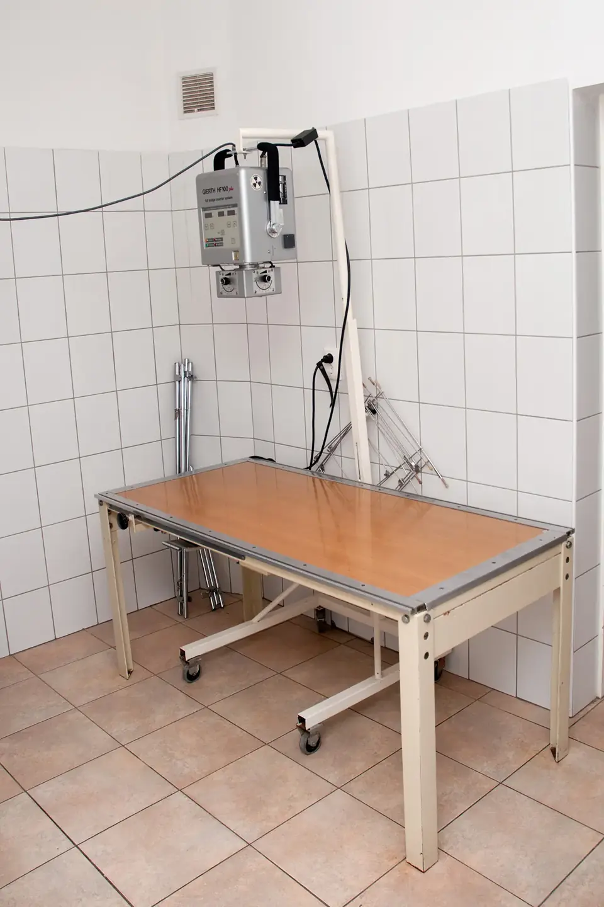
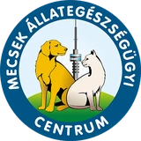
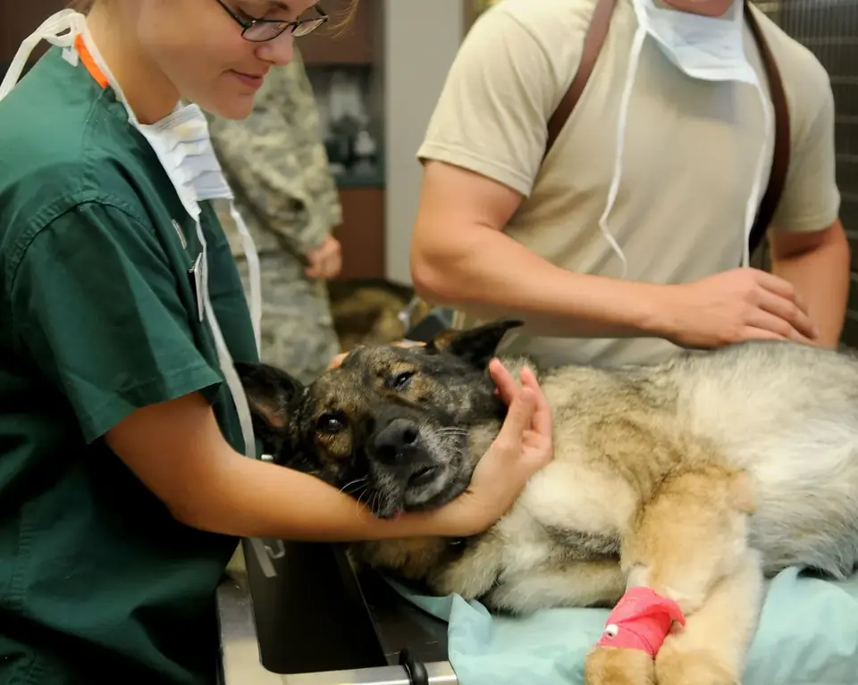
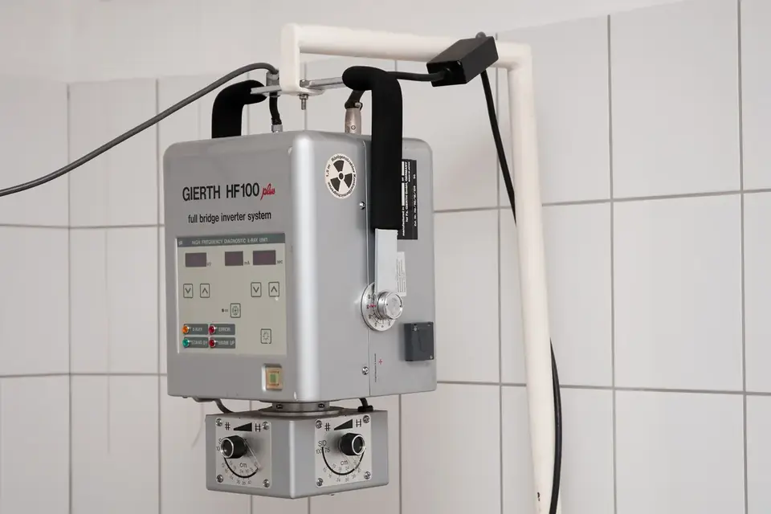
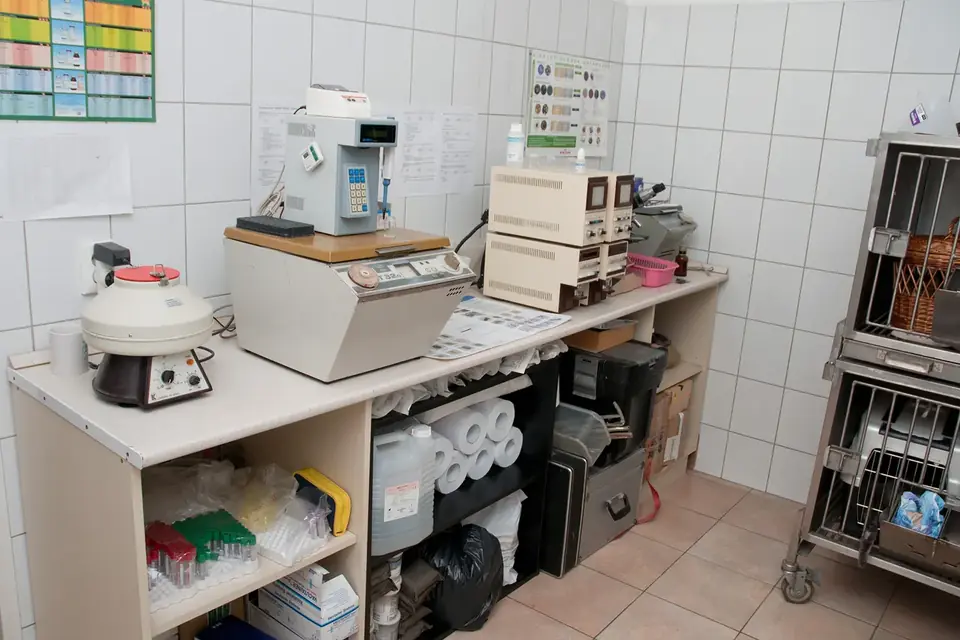
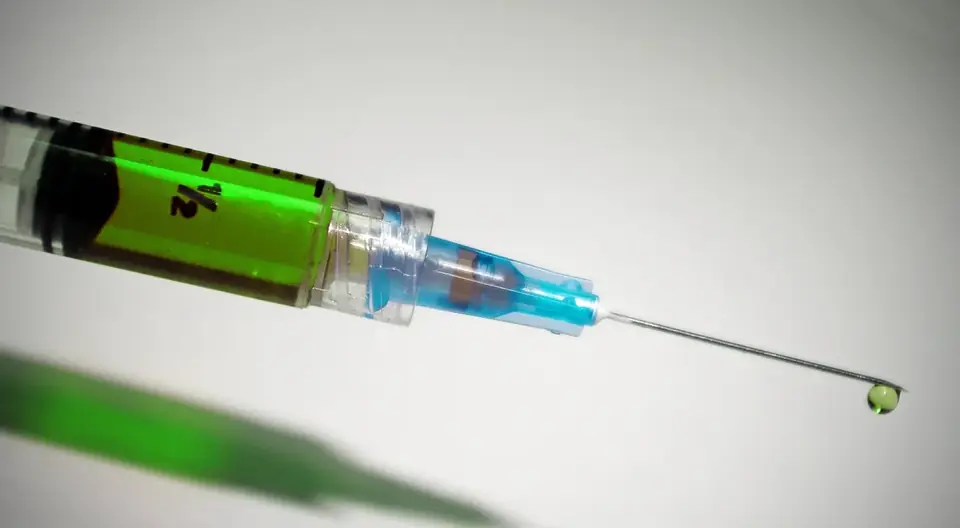
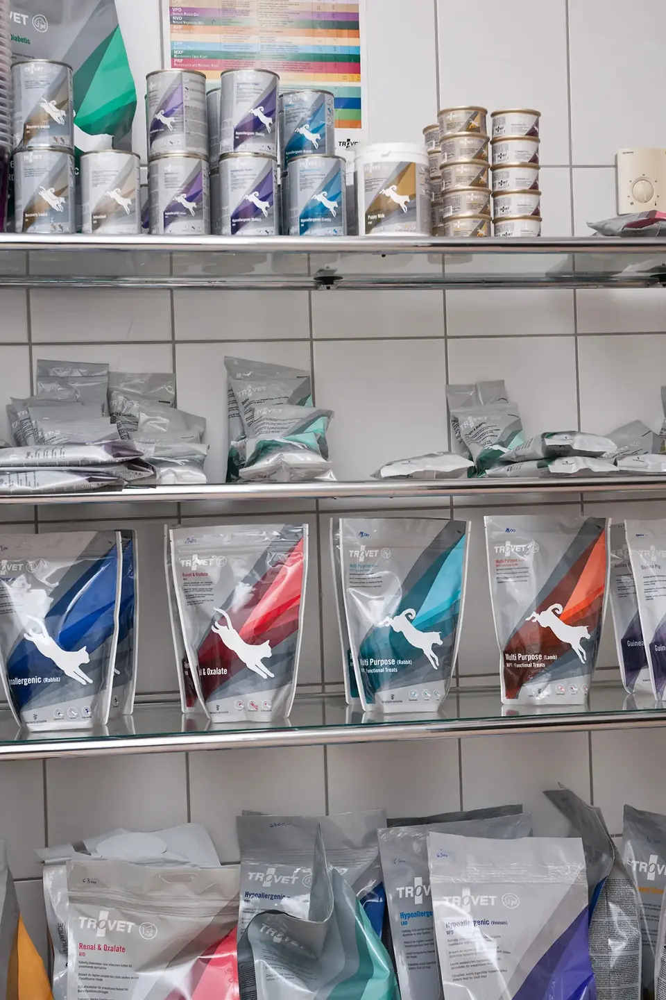
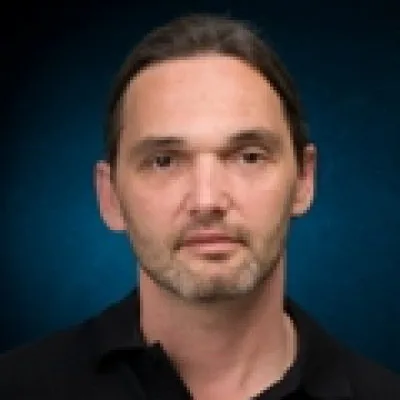
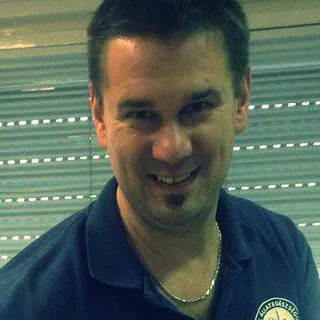

Belgyógyászat
Teljes körű belgyógyászati ellátás, első vizsgálattól az utókezelésig, dietetikai szaktanácsadással.

MECSEKÁllategészségügyi CentrumKutyák és macskák mellett rágcsálók, madarak és hüllők ellátása: belgyógyászat, sebészet, röntgen, ultrahang és labor egy helyen. Időpontot online is foglalhat.
Rendelőnkben kutyák és macskák mellett rágcsálók, madarak és hüllők egészségügyi ellátásával foglalkozunk.

Teljes körű belgyógyászati ellátás, első vizsgálattól az utókezelésig, dietetikai szaktanácsadással.

Lágyszervi- és csontsebészeti műtétek, szülészeti vizsgálatok és műtétek, ivartalanítás.

Röntgendiagnosztika (pl. dysplasia szűrés), vemhességi, hasüregi és szívultrahang, EKG.

Vérkép, biokémia, progeszteronszint-mérés, mikroszkópos és citológiai vizsgálatok.

Kötelező és ajánlott védőoltások, mikrochip beültetése, EU állatútlevél kiállítása.

Dietetikai szaktanácsadás és gyógytáp forgalmazás a rendelőben.
Ezekben az esetekben kedvenceink minél korábbi ellátást igényelnek:
Rendelőnk 2003 decemberében nyitott Pécs-Kertvárosban Dr. Garami József szakmai irányításával. Dr. Gönczi István 2012. januári érkezése óta egész napos nyitva tartással, folyamatosan bővülő szolgáltatásokkal várjuk a kis kedvenceket és a gazdikat.

Állatorvos, a rendelő alapítója

Kisállatgyógyász-klinikus szakállatorvos
2003-ban tette le állatorvos-doktori esküjét, csontsebészeti gyakornokság után 2010-ben kisállatgyógyász-klinikus szakállatorvosi másoddiplomát szerzett. 2012 óta dolgozik a centrumban.
739 értékelés a Google-on. Sok gazdi évek óta, kölyökkortól hozza hozzánk kedvencét.
„Szakmailag maximálisan felkészültek, nagy tapasztalattal rendelkeznek … 1200 kilométerről is teljes bizalommal fordulhatunk hozzájuk.”
„Baba kora óta járunk … nagyon kedvesek a Dr. Urak, nagyon segítőkészek és empatikusak. Lehet, hogy kell picit várni, de a legjobb ellátást fogja kapni.”
Válassza ki a látogatás okát: megmutatjuk, mire készüljön, mit hozzon, és mennyibe kerül az árlista szerint. Utána egy kattintással foglal, vagy visszahívást kér.
Válasszon egyet:
Hagyja meg a nevét és a telefonszámát, és rendelési időben visszahívjuk. Ha tudja, mikor jönne, foglaljon inkább online.
Oltásra, kontrollvizsgálatra, varratszedésre, útlevél-kiállításra, vérvételre és exotikus kisállat vizsgálatára online is foglalhat időpontot. Sürgős esetben ne foglaljon, hanem hívja a rendelőt: 06 72 411 211.
Hétfőtől péntekig 9:00 és 19:00 között, szombaton 9:00 és 12:00 között. Vasárnap zárva.
Kutyák és macskák mellett rágcsálók, madarak és hüllők teljes körű belgyógyászati, lágyszervi- és csontsebészeti, szülészeti ellátásával foglalkozunk.
Hétvégén és ünnepnapokon a sürgősségi ügyelet száma: +36 30 970 5419.
A 2025. május 5-től érvényes árlista szerint az első általános klinikai vizsgálat kutyánál 9000 Ft, macskánál 7000 Ft; utókezelésnél 7000 Ft, illetve 5000 Ft.
Vérvétel előtt 12 órával ne egyen a páciens.
A rendelő előtt parkolási lehetőség van. Busszal a 3-as és a 60-as helyi járattal, az Árnyas út megállótól kb. 50 méterre.
| Hétfő | 9:00–19:00 |
| Kedd | 9:00–19:00 |
| Szerda | 9:00–19:00 |
| Csütörtök | 9:00–19:00 |
| Péntek | 9:00–19:00 |
| Szombat | 9:00–12:00 |
| Vasárnap | zárva |